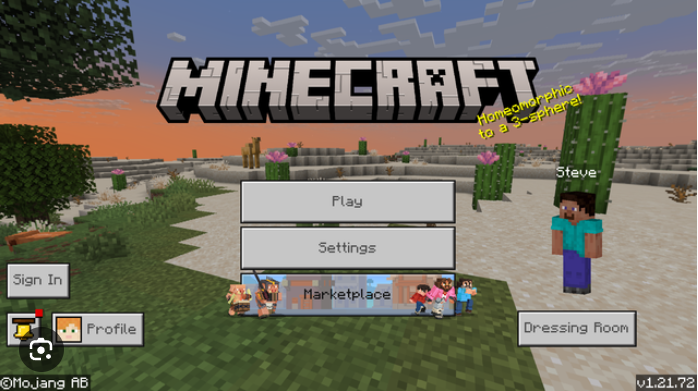

Minecraft 1.21.72 APK Mediafire Descargar Actualizado para Android
La versión Minecraft 1.21.72 APK es una excelente opción para los jugadores que desean probar las últimas novedades del juego antes de su lanzamiento oficial.
Minecraft sigue siendo uno de los videojuegos más populares del mundo, con millones de jugadores explorando, construyendo y sobreviviendo en sus mundos infinitos. La versión Minecraft 1.21.72 APK ha llegado con nuevas mejoras, correcciones de errores y funciones que prometen mejorar la experiencia de juego en dispositivos Android. En este artículo, te contamos todo lo que necesitas saber sobre esta versión, cómo descargarla mediante Mediafire, y qué novedades trae.
¿Qué es Minecraft 1.21.72 APK?
La versión 1.21.72 de Minecraft es una actualización no oficial del popular juego de Mojang que se ha adaptado para ser instalada mediante archivo APK en dispositivos móviles Android. Aunque no forma parte de la versión estable oficial lanzada por Google Play, incluye muchas características de las betas más recientes y, en algunos casos, añade funciones experimentales que aún no están disponibles de forma global.
Esta versión es ideal para quienes desean probar nuevas funcionalidades antes de que lleguen a la edición estándar, o simplemente para quienes prefieren no depender de la tienda oficial para instalar sus juegos.
Características destacadas de Minecraft 1.21.72
1. Mejoras en el rendimiento
Una de las mayores prioridades de Mojang en esta actualización ha sido mejorar el rendimiento del juego en dispositivos móviles. Se han optimizado los tiempos de carga, la fluidez de los movimientos y la estabilidad general, especialmente en dispositivos de gama media y baja.
2. Corrección de errores
Minecraft 1.21.72 incluye varias correcciones de errores reportados por la comunidad. Entre ellos se encuentran problemas con la colocación de bloques, fallos en el sistema de redstone, y errores gráficos al cambiar entre vistas en primera y tercera persona.
3. Nuevos bloques y criaturas
Esta versión trae consigo algunos bloques experimentales que probablemente se incluirán en futuras actualizaciones oficiales. Se rumorea la inclusión de bloques decorativos inéditos, nuevos tipos de piedra y elementos para la construcción subterránea. También hay reportes de criaturas nuevas en zonas específicas del mapa, como versiones modificadas de zombis o mobs pasivos que no habían aparecido antes en ediciones móviles.
4. Funciones de jugabilidad avanzadas
La 1.21.72 permite explorar mecánicas que estaban limitadas a versiones de prueba, como nuevas formas de comercio con aldeanos, personalización de escudos, o comandos más complejos para los jugadores creativos. Esta versión es ideal para quienes disfrutan creando mapas, aventuras o minijuegos.
¿Por qué elegir Mediafire para la descarga?
Mediafire es una de las plataformas de almacenamiento más utilizadas para compartir archivos APK debido a su facilidad de uso, descargas rápidas y sin tantas restricciones. A diferencia de otras plataformas, Mediafire permite obtener el archivo de forma directa sin necesidad de pasar por múltiples acortadores o anuncios invasivos.
Al descargar Minecraft 1.21.72 APK desde Mediafire, los jugadores pueden obtener el archivo en pocos segundos y proceder a su instalación sin complicaciones.
Cómo instalar Minecraft 1.21.72 APK en Android
Instalar una APK en Android es un proceso sencillo, pero requiere seguir algunos pasos para garantizar que se realice correctamente:
- Activar orígenes desconocidos: Ve a Configuración > Seguridad > y activa la opción “Fuentes desconocidas” o “Instalar aplicaciones de fuentes externas”.
- Descargar el archivo APK: Descarga el archivo desde el enlace proporcionado en Mediafire. Asegúrate de que sea una fuente confiable y revisa que el archivo tenga la extensión
.apk. - Instalar el archivo: Una vez descargado, abre el archivo y sigue las instrucciones en pantalla para instalar Minecraft 1.21.72.
- Disfrutar del juego: Una vez instalado, podrás iniciar Minecraft y empezar a explorar todas las nuevas funciones que ofrece esta versión.
Recomendaciones antes de instalar
- Haz una copia de seguridad: Si ya tienes una versión anterior de Minecraft instalada, realiza una copia de seguridad de tus mundos para evitar pérdidas accidentales.
- Revisa la compatibilidad: Esta versión puede no funcionar correctamente en dispositivos muy antiguos o con sistemas operativos desactualizados.
- Ten precaución con los archivos: Asegúrate de que el APK no haya sido modificado maliciosamente. Es recomendable escanear el archivo con un antivirus antes de instalarlo.
Conclusión
La versión Minecraft 1.21.72 APK es una excelente opción para los jugadores que desean probar las últimas novedades del juego antes de su lanzamiento oficial. Gracias a Mediafire, la descarga es rápida y sencilla, permitiendo a los usuarios acceder a una experiencia actualizada y más dinámica. Desde mejoras en el rendimiento hasta nuevos elementos en el juego, esta versión promete horas de diversión tanto para jugadores veteranos como para nuevos aventureros.
Si eres amante de Minecraft y quieres mantenerte al día con lo último que ofrece la comunidad, no dudes en probar esta versión. ¡Explora, construye y sobrevive en el mundo cúbico más famoso de todos los tiempos!